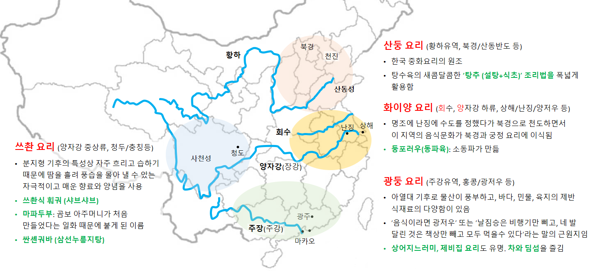

중국은,
중국은 넓고 그만큼 다양한 문화와 사람들이 존재
- 중국사람은 키가 크다/작다, 잘생겼다/못생겼다, 더럽다/깨끗하다라는 식으로 간단히 정의 할 수 없음
- 마찬가지로 중국은 덥다/춥다, 강수량이 적다/많다는 식으로 간단히 정의 할 수 없음
- 모두 맞는 말임
지리적, 기후적인 특징, 물 부족
- 지역에 따라 여러 가지 기후가 나타남
- 특히, 내륙은 강수량이 매우 적음. 북경만해도 내륙이라 강수량이 적은 편임
- 중국인들이 잘 안 씻는 것은 강수량이 적기 때문으로 생각됨. 물이 없기 때문에 씻을 수가 없음
- 꽤 오래 전부터 인공 강우를 많이 연구했고, 또 실시해 오고 있음
- 북경도 물이 부족하여 물 값이 비싸며, 수질 또한 좋지 않음
- 고급아파트의 경우 자체 정수 시스템을 갖추고 있으며, 그만큼 물값도 비쌈 (2009년 기준 3개월 20 여만원)
2008 북경 올림픽
- 올림픽을 계기로 질서의식도 높아지고 하늘이 많이 깨끗해 졌음
- 북경 사람들조차 파란 하늘은 처음 본다고 함
- 사람들이 많이 깨끗해 졌음. 지금은 한 달에 한 번은 머리를 감는 것 같음 (주관적인 생각입니다)
휴일/국경일 (2009년 경우임, 매년 달라짐)
- 원단(신정) : 1월 1일(목)~3일(토)까지 쉬도록 한다. 이중 1월 1일(목)은 법정휴일이고 1월3일(토)일은 공휴일이다.
1월 4일(일) 공휴일을 1월 2일(금)로 조정하며 1월 4일(일)은 정상 출근한다.
- 춘절(구정) : 1월 25일(일)~31(토)까지 쉬도록 한다. 이중 1월 25일(일)~27일(화)은 법정휴일이며
1월 31일(토)은 공휴일로 그대로 쉬도록 한다. 1월 25일(일)을 1월 28일(수)로 조정해 쉬며
1월 24(토)와 2월 1일(일) 공휴일은 1월 29(목)과 1월 30일(금)으로 조정하며 1월 24일(토)와
2월 1일(일)은 정상출근한다.
- 청명절 : 4월 4일(토)~6일(월)까지 쉬도록 한다. 이중 4월 4일(토)로 법정 휴일이며 4월 5일(일)은
공휴일로 정상적으로 쉰다. 4월 4일(토) 공휴일을 4월 6일(월)로 조정해 쉬도록 한다.
- 노동절 : 5월 1일(금)~3일(일)까지 쉬도록 한다. 이중 5월 1일(금)은 법정 휴일이며 5월 2일(토)와
5월 3일(일)은 공휴일로 정상적으로 쉰다.
- 단오절 : 5월 28일(목)~30일(토)까지 쉬도록 한다. 이중 5월 28일(목)은 법정휴일이고 5월 30일(토)은
공휴일로 정상적으로 쉰다. 5월 31일(일) 공휴일을 5월 29일(금)으로 조정해 쉬며 5월 31일(일)은
정상출근 토록 한다.
- 국경절,추석 : 10월 1일(목)~8일(목)까지 쉬도록 한다. 이중 10월 1일(목), 10월 2일(금), 10월 3일(토)은
국경절 법정휴일로 쉰다. 10월 4일(일)은 공휴일로 그대로 쉰다. 10월 3일(토) 은 공휴일이면서
추석 당일로 각각 10월 5일(월)과 10월 6일(화)로 조정해 쉬도록 한다. 9월 27일(일)과 10월 10일(토)
공휴일은 각각 10월 7일(수)과 10월 8일(목)로 조정해 쉬도록 한다. 9월 27일(일)과 10월 10일(토)은
정상출근토록 한다.
중앙집권형 정책 시행
- 중앙정부는 정책 집행에 막강한 영향력 행사
- 상대적으로 인권 및 사생활은 살짝 무시됨
- 일례로 몇 년 전까지 자전거 문화를 장려했으나, 지금은 자건거 타는 사람을 찾아보기 어려움
2009년 건국60주년 기념행사
- 1949년 10월 1일 모택동 선생의 중화인민공화국 건국을 기념하기 위한 행사
- 천안문 광장에 수십만 명이 모여 퍼레이드, 매스게임 등을 진행함
- 행사 준비를 위해 인적이 끊기는 밤에 모여서 연습을 했다고 하며, 연습 시 화장실이 부족해서 기저귀를 차고 모였다는 이야기도 있음
- 그래도 행사 참여자들은 자자손손 물려 줄 이야기로 영광스러운 일로 생각함
차이 (요리)
- 중국에서 ‘랴오이(요리)’는 음식을 뜻하지 않고 ‘일을 처리하다’라는 뜻의 동사임
- 최근 한국요리와 일본요리가 널리 소개되면서 이 두 나라의 음식에 대해서만 ‘랴오리’라는 말을 사용함
- 중국어에서는 요리에 해당하는 어휘는 ‘차이’임. 채소, 반찬, 요리의 세 가지 뜻이 있음
- 우리 나라에도 ‘웰차이(Well-chai)’라는 중식 체인점이 있음. 「웰(Well)」은 건강과 웰빙을 나타내며, 「차이(chai)」는 음식, 중국 등의 뜻이 있음
한중 음식문화의 차이점
- 음식의 다양성은 중국이 압도적이다. 한국의 식당에서는 메뉴판을 내놓지만, 중국의 식당에서는 메뉴책이라 할 수 있는 두꺼운 차이푸를 내놓음
- 한국을 찾은 중국 관광객은 배가 고프다. 기름에 볶은 요리에 길들여진 중국인들에게 담백한 한국음식은 먹고 돌아서면 허기가 짐
- 중국에서는 접대의 융숭함을 음식의 양으로 판단한다. 자신의 경제력은 고려하지 않음. 적어도 손님이 먹은 양보다 더 많은 음식이 남아야 비로소 접대가 잘 된 것을 생각함
- 손님에게 음식을 집어 주는 것이 접대 예절이다.
- 중식의 기본은 판과 차이다. 요리에 해당하는 차이로 먼저 배를 채우고 뒤이어 판에 해당하는 밥이나 국수와 같은 곡류음식을 먹음.
- 자연스럽게 여러 사람이 다양한 차이를 먹을 수 있는 회식을 즐김. 2차가 없고, 식사자리가 술자리를 겸한다
- 과일이 아니면 거의 생식을 하지 않는 중국인들은 물도 대개 끊여 마신다. 겨울에도 냉수를 마시는 한국인들을 진맥해본 중국의 한의사들은 한국인의 몸 속에 찬 기운이 가득하다고 말함
한국인의 자장면에 대한 상식
- 초보단계: 중국에는 자장면이 없다
- 발전단계: 중국에도 자장면이 있다
- 심화단계: 중국 본토의 자장면은 한국 자장면과 다르다
- 원숙단계: 한국 자장면의 원조는 중국 산동 자장면이다.
중국음식의 계보 구분

화이양요리 (양자강 하류, 상해/난징/양저우 등)
- 명조에 난징에 수도를 정했다가 북경으로 천도하면서 이 지역의 음식문화가 북경과 궁정요리에 이심됨
- 둥포러우(동파육): 송대의 문호 소동파가 항저우 지방관으로 부임했을 때 손수 개발한 요리로, 두껍게 썬 돼지 삼겹살을 술, 간장, 식초 등의 양념과 함께 오랜 시간 졸여 완성함
쓰촨요리 (양자강 중상류, 청두/충칭 등)
- 분지형 기후의 특성상 자주 흐리고 습하기 때문에 땀을 흘려 풍습을 몰아 낼 수 있는 자극적이고 매운 향료와 양념을 사용
- 사천식이란 말로 우리에게 알려져 있음
- 쓰촨식 훠궈 (샤브샤브): 검붉은 국물 맛에서 혀를 마비시키듯 얼얼함 맛을 느낄 수 있음 (화자오-산초나무 열매)
- 마파두부: 곰보 아주머니가 처음 만들었다는 일화 때문에 붙게 된 이름
- 싼셴궈바 (삼선누릉지탕): 우리에게 많이 알려진 쓰촨 요리의 하나임
산둥요리 (황하유역, 북경/산동반도 등)
- 한국 중화요리의 원조
- 자장면은 100여 년 전 인천에 정착한 산둥성 노무자들에 의해 만들어진 음식임
- 산둥요리는 탕수육의 새콤달콤한 ‘탕추’ 조리법을 폭넓게 활용함
- 일반적으로 중국사람들이 볶음요리를 즐기는 것에 반해, 산둥사람들은 야채를 생식하는 점이 한국과 흡사함
광둥요리 (주강유역, 홍콩/광저우 등)
- 아열대 기후의 물산이 풍부하고, 바다, 민물, 육지의 제반 식재료의 다양함이 있음
- ‘음식이라면 광저우’ 또는 ‘날짐승은 비행기만 삐고, 네 발 달린 것은 책상만 빼고 모두 먹을수 있다’라는 말의 근원지임
- 줄머리사향삵, 천산갑, 너구리, 고양이, 원숭이 뱀 등 희귀 동물을 식재료로 사용
- 사스 파동의 초기 발상지이며, 이후 야생동물을 식재료로 삼는 관습을 많이 자제하는 분위기임
- 상어지느러미, 제비집 요리도 유명함
- 차와 딤섬을 즐김
최초 작성: 2019년 09월 09일
최종 수정: 2019년 09월 09일